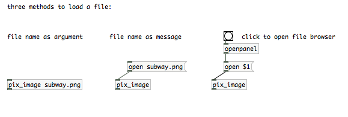
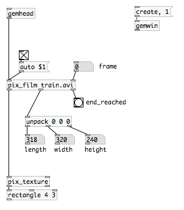
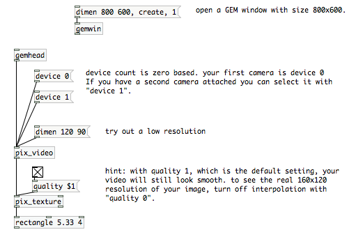

Images, Movies and Live Video
For any image processing you need a source image. This can be a file that you load from your harddrive or a live video feed. This chapter will introduce [pix_image], [pix_film], [pix_movie] and [pix_video].[pix_image]
In the basics chapter we already used the object [pix_image]. This object allows you to load picture files. Supported formats are *.tif, *jpg, *.png, *.bmp and *.gif.
To load an image into [pix_image] either add the filename as an argument or send it the message open filename. If you want to select a file using a file browser you can use the object [openpanel].

[pix_film]
As with [pix_image] you can load movie files by passing [pix_film] the file name as an argument, or by sending it an "open" message with the filename. The list of supported formats may vary depending on your installed movie codecs, but usually you should be able to play *.avi, *.mov and *.mpg files.
Please be aware that sound is not supported by [pix_film] ([pix_movie] neither). If you want to sync a soundtrack of a video to your images, you have to first extract it using an external video editor.
[pix film] will play your movie automatically if you send it a message "auto 1". The framerate at which your movie is played is dependent on the framerate that was set with gemwin. The message "auto 0" will cause [pix_film] to just display the current frame. You can use the right inlet to scroll through your movie or jump to a certain frame. That also allows you to play movies at different speeds, even backwards.
The rightmost outlet of pix_film will output a "bang" everytime the end of the film is reached.

[pix_movie]
[pix_movie] works exactly like pix_film. The only difference is that you don't need [pix_texture]. You can directly connect the outlet of [pix_movie] to a rectangle.
[pix_video]
[pix_video] will grab live input of a camera that is attached or built into your computer. Usually you can receive a video signal only once on your machine, so if another application or even another Pd patch already uses video input, [pix_video] will not be able to receive a signal. On the other hand, if you have several cameras attached to your system, you can use several [pix_video] objects and specify the the camera devices with messages like "device 0" and "device 1".
A "dimen" message will let you set the resolution of your video image. If you use a small resolution, your render engine will have less pixels to render and thus be faster, but of course this will also decrease the image quality. To test different resolutions you might want to set the quality setting of [pix_texture] to 0. You will also realize that not all resolutions are supported by your system. Just play around with dimen to figure out how high or low you can set dimensions.

Related Objects
Finally, I also would like to briefly mention some other objects that allow you to "create" images. [pix_multiimage] will allow you to load several images at once. Use the right inlet to switch between them. Also check out [pix_set] if you want to create an empty image. Or play around with [pix_sig2pix~] if you want to feed your audio signal into an image buffer.